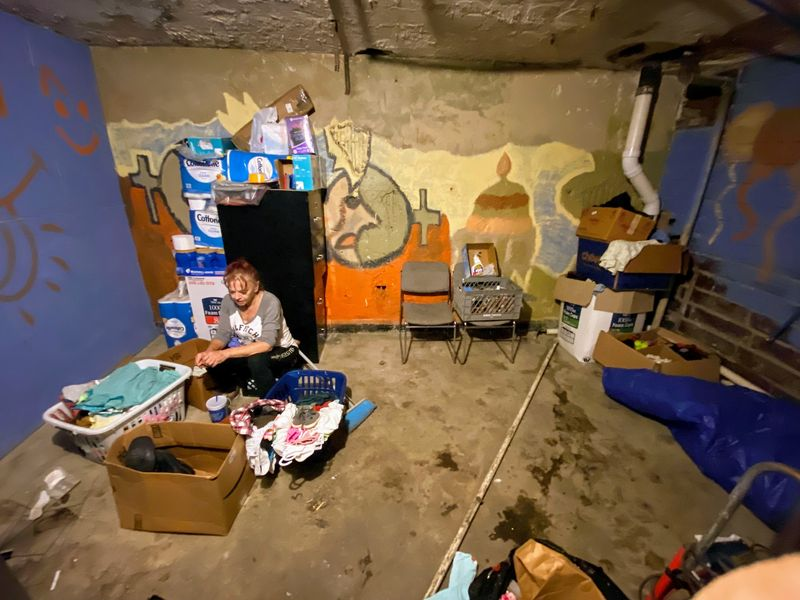

Timeline photos
This is my friend Pandora.
I wish I had taken a "before" picture of this storage room. It was a total mess. She organized and cleaned the entire room.
We got her ID a few weeks ago. Last Friday she got a phone.
She had nowhere to stay after the city forced us to close our tent city. I and some others finally convinced her to go to the battered women's shelter.
These were all huge steps in her life.
She was kicked out of the shelter after 2 nights. She asked what she did. They told her they didn't know. She asked if she could get her belongings. They told her to come back later.